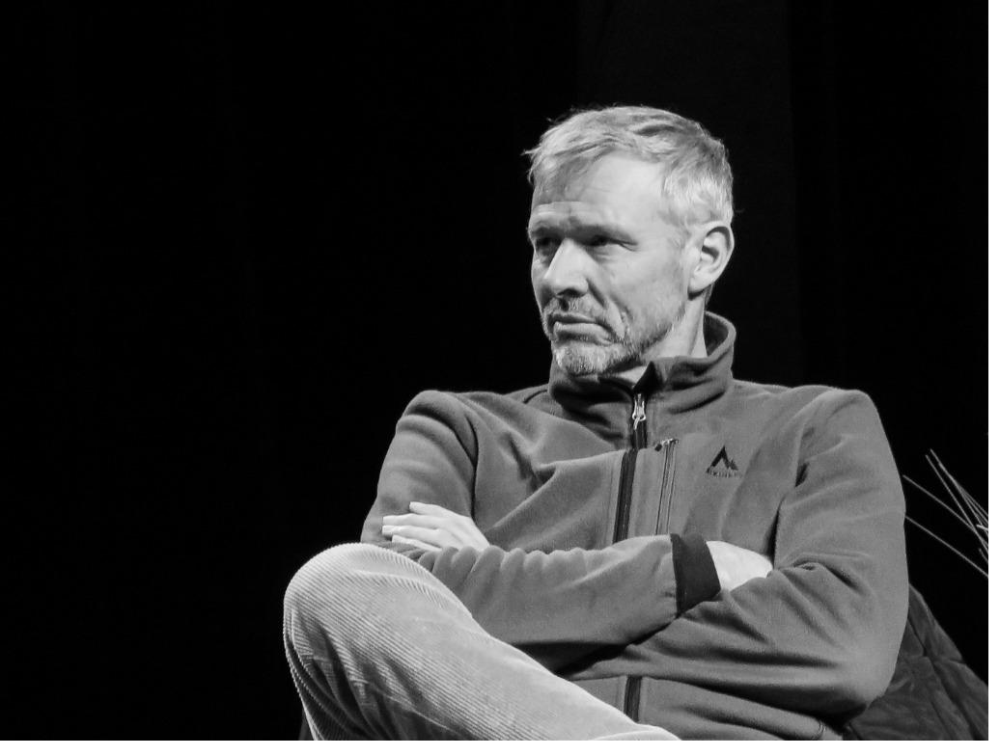

Ce que le plateau m'a appris sur les êtres humains

Je pratique le théâtre depuis trente-cinq ans. Je joue, je mets en scène, j'écris, j'enseigne. La dynamique des groupes et la recherche personnelle en sont inséparables.
De 2000 à 2008, j'ai été consultant associé à l'Institut Renault de la Qualité et du Management. Ce passage m'a fait découvrir l'entreprise de l'intérieur, et la diversité des façons dont on s'y organise. Je suis intervenu pour Renault en interne, puis pour d'autres structures — chacune avec ses circuits de décision, ses hiérarchies, ses habitudes de réunion. J'y ai appliqué ma connaissance des dynamiques de groupe et de la richesse de la créativité collective, quand on lève les obstacles.
J'ai appris à lire ce qu'un corps exprime quand la voix se tait. À entendre ce qu'une équipe retient quand elle n'ose pas parler. À percevoir ce qu'un dirigeant porte, seul, quand personne ne regarde. C'est cette école-là que j'apporte en entreprise. Pas comme une méthode. Comme une expérience.
- 1998 · 1999Deux mises en scène au Quartz, scène nationale de Brest, à l'invitation de son directeur Jacques Blanc.
- 2000 – 2008Consultant associé à l'Institut Renault de la Qualité et du Management.
- FormationStages auprès de John Strasberg, Klim, Leonid Kheifets et Natalia Zvereva — ces deux derniers enseignants au GITIS de Moscou, dont j'ai suivi les cours.
- Depuis 2007Cofondateur du Pôle Théâtre de Kerfeunteun, à Quimper. J'en structure le travail et j'accompagne les cinq pédagogues qui enseignent à mes côtés.
- Aujourd'huiJ'interviens pour le compte du ministère de la Justice auprès de jeunes de quinze à dix-huit ans suivis par la protection judiciaire de la jeunesse.
Ce que représentent trente-cinq ans
Ce que je fais — et comment
J'interviens sur six terrains qui, pour moi, se rejoignent toujours. Ce qui les relie : est-ce que vous êtes là, vraiment ? Présent. Vous-même.
Dynamiques d'équipe
Révéler ce qui se joue vraiment dans un collectif — les non-dits, les forces cachées, les liens qui manquent. Créer les conditions pour qu'une équipe se rencontre vraiment et avance ensemble.
Séminaires d'équipe
Des expériences vécues ensemble, pas des exercices. Le projet commun, ça éveille, ça élève : à travers les outils du plateau, les équipes découvrent qu'elles sont capables de bien plus qu'elles ne le croyaient.
Prise de parole en public
Habiter sa voix, son corps, sa présence. Écouter induit une certaine passivité ; entendre est une écoute active, être impacté physiquement par ce qui est dit. Dans une prise de parole, les mots ne sont pas le discours. L'objectif n'est pas d'apprendre à parler en public : c'est de devenir celui qui parle. Et les progrès arrivent souvent plus vite qu'on ne l'imagine.
Accompagnement des dirigeants
Diriger se fait presque toujours seul. Personne ne dit ce qu'on aurait pu faire autrement, et les questions s'accumulent sans interlocuteur. Ce suivi est fait pour cela : quelqu'un avec qui reprendre. Non pas des réponses toutes faites, mais un regard extérieur et un point d'appui, pour affiner votre propre manière de faire.
Mises en situation théâtrales
L'improvisation, le corps, l'espace, le silence comme révélateurs. Quand l'acteur est présent, tout se passe, tout se produit — et cela vaut aussi pour une équipe réunie autour d'une table.
Ateliers sur mesure
Chaque intervention est conçue pour un contexte, jamais sur catalogue. Une création partagée avec vous, du premier échange jusqu'au dernier atelier.
Concrètement, si vous m'appelez
Un premier échange
30 minutes ensemble, sans engagement. Pour comprendre votre situation, vos enjeux, ce que vous traversez.
Une proposition sur mesure
Une intervention pensée pour vous, votre équipe, votre moment — construite après ce premier temps d'échange.
On y va
Je viens à vous. Ce qu'on a préparé, on le vit : on met les situations en jeu, chacun s'y engage, et on revient ensuite sur ce qu'on vient de traverser.
Ce que je ne fais pas — et pourquoi
Je ne vends pas de techniques. Je ne crois pas aux formations qui laissent les gens exactement comme ils étaient, juste un peu plus informés.
Ce qui me touche, c'est le moment où quelqu'un se surprend lui-même. Où un groupe découvre qu'il est capable de bien plus qu'il ne le croyait. Où un dirigeant lâche la maîtrise et trouve une autorité plus douce, plus profonde.
Ces moments-là n'arrivent pas avec des slides. Ils arrivent quand on crée ensemble les conditions pour qu'ils soient possibles.
"Si ces mots vous ont touché, nous avons sans doute quelque chose à construire ensemble. Parlons-en."
J'écoute avant tout
Chaque intervention commence par une écoute de votre contexte et de vos enjeux réels — pas ceux qu'on suppose de prime abord. Les vraies questions ne se posent jamais brutalement au début : elles cheminent dans les corps et les regards, et ce sont elles qui orientent le travail.
Je crée des conditions
Pas de recettes préconçues ni de méthodes figées, mais un espace de confiance où l'on peut ralentir. Quand les gens parlent vite et ne se regardent pas, ils fuient ce qui risque de se produire. Mon travail est de ralentir ce mouvement, jusqu'à ce que chacun redevienne présent. C'est là que la vie circule à nouveau dans le groupe, que les projets prennent corps et que les relations deviennent réelles.
Je co-construis avec vous
Les solutions que nous découvrons ensemble sont celles que vos équipes peuvent s'approprier, porter et faire vivre durablement au quotidien.
Ils me font confiance
Ils m'ont fait confiance
Parlons de votre projet
Chaque mission commence par un échange. Je vous propose un premier appel de 30 minutes, sans engagement, pour explorer ensemble vos enjeux et voir si ma façon de travailler vous correspond.